C++ STL基础
第七章 STL
六大部件

分配器：为容器分配内存
迭代器：算法只能通过迭代器访问容器
容器

Array
定长数组
_M_instance：指向数组首元素的指针（int a[10]的a）
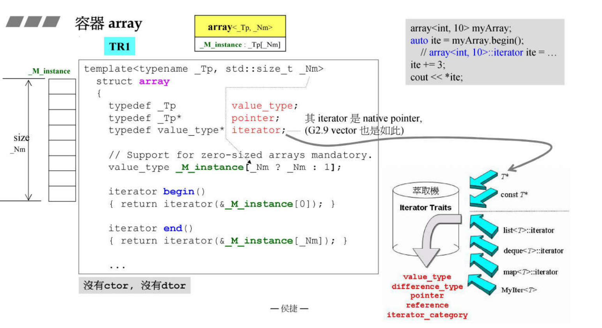
iterator为指针，traits通过指针特化处理
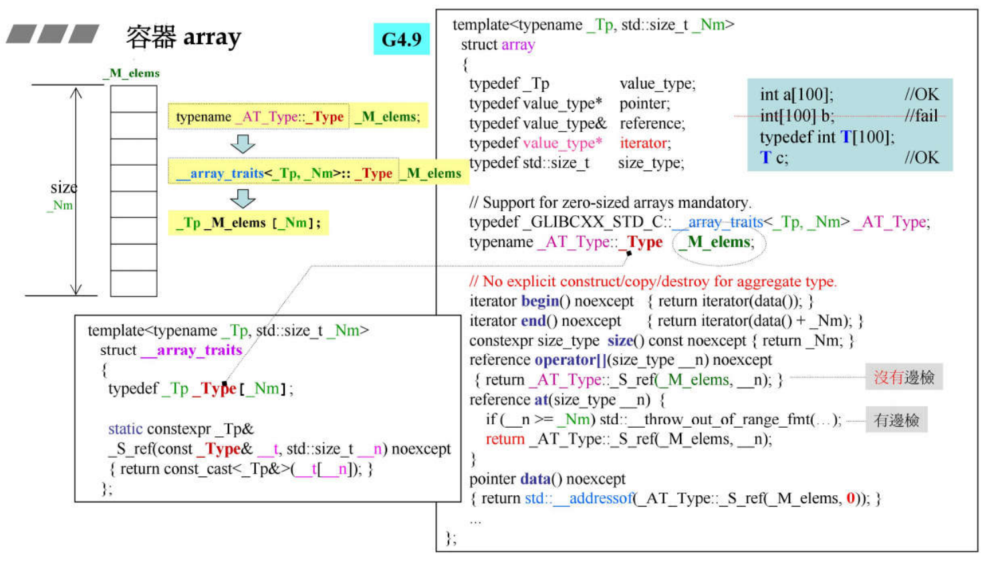
Vector
变长数组
start（4B）：指向第一个元素的指针
finish（4B）：指向最后一个元素的下一个指针
end_of_storage（4B）：容器申请的内存空间的最后一个元素的下一个地址
若内存空间不够则申请当前空间两倍的空间
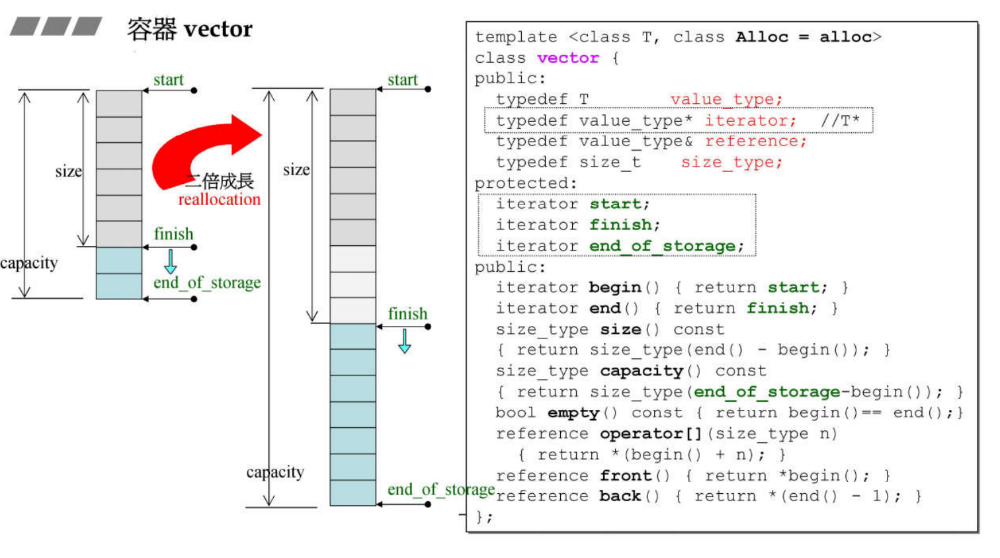
iterator为指针，traits通过指针特化处理
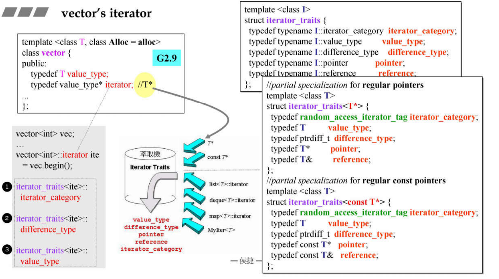
List
双向链表
node（4B）：指向头节点的指针
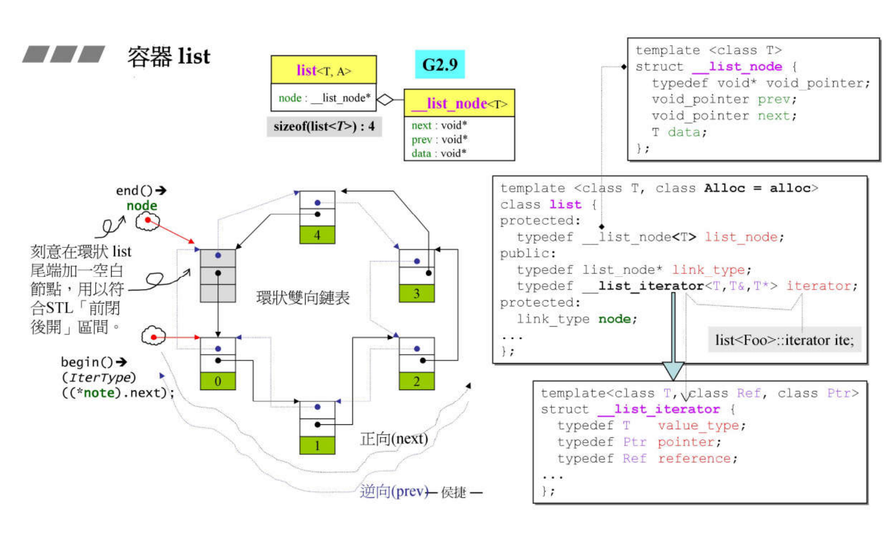
iterator里的node为指向当前节点的指针
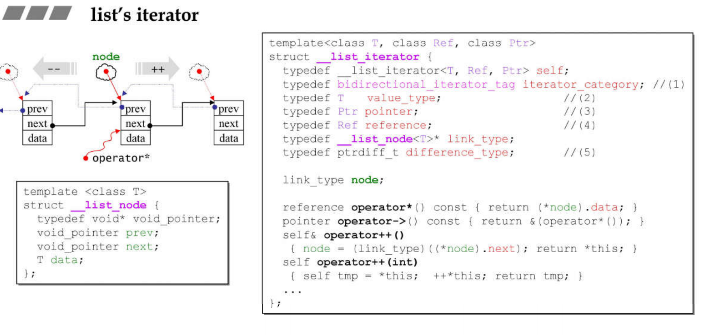
Forward List
单向链表
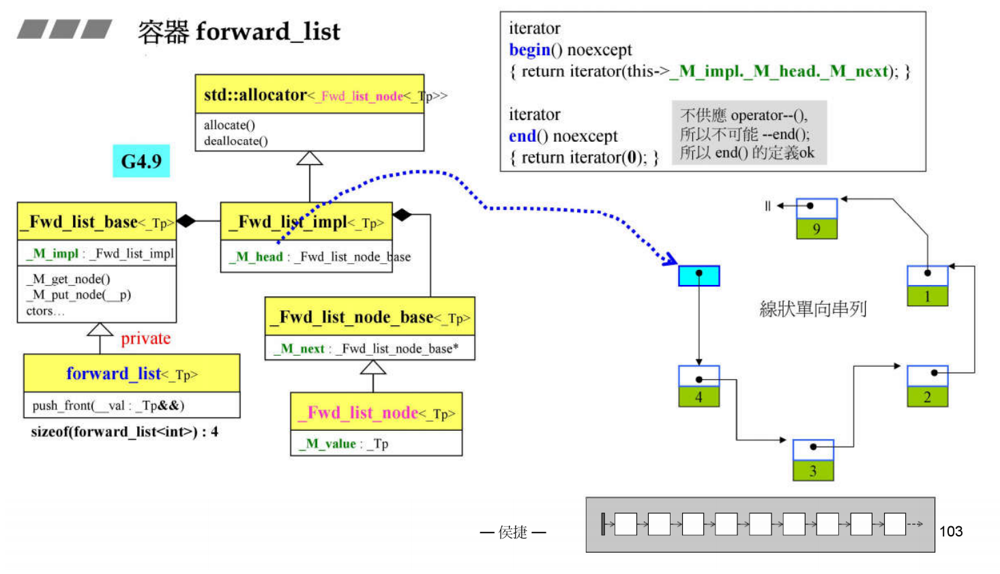
Deque
双端队列
queue在内存中每个buffer块离散存储，通过map表记录各buffer块的地址
start（16B）：指向首元素的iterator
finish（16B）：指向尾巴元素下一个块的iterator
map（4B）：指向map首元素的指针
map_size：map占用内存的大小
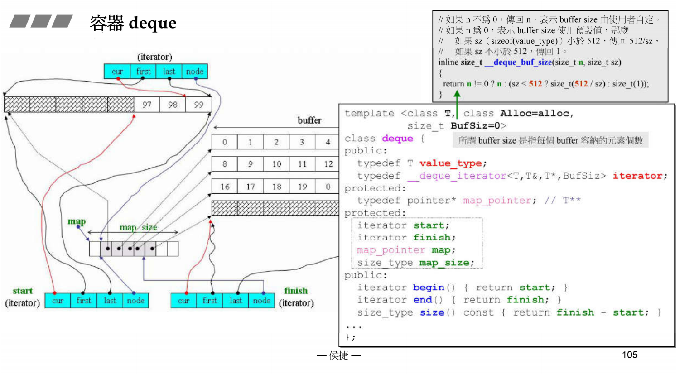
cur：指向当前元素的指针
first：指向当前buffer块首元素的指针
last：指向当前buffer块尾元素下一个块的指针
node：指向map对应元素的指针
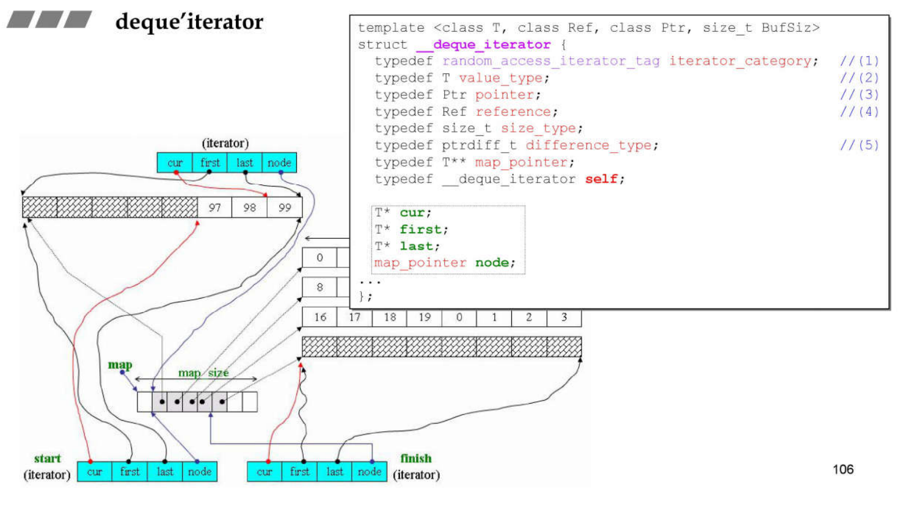
Queue
队列
不允许遍历也不提供iterator
可选择list或deque作为底层存储
不可选择vector作为底层存储
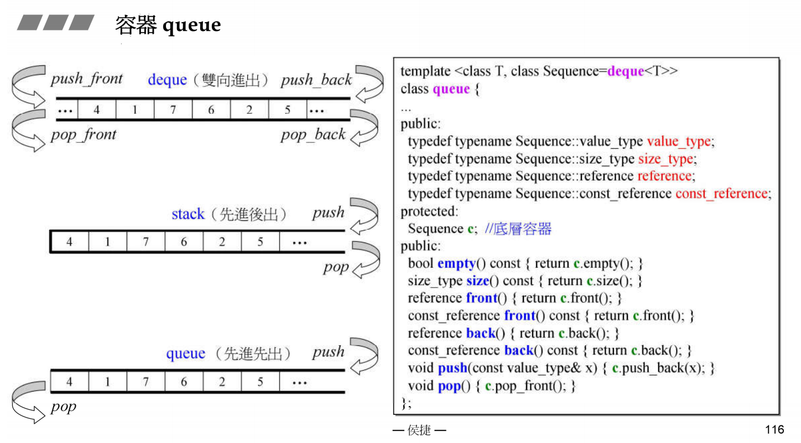
Stack
栈
不允许遍历也不提供iterator
可选择list或deque或vector作为底层存储
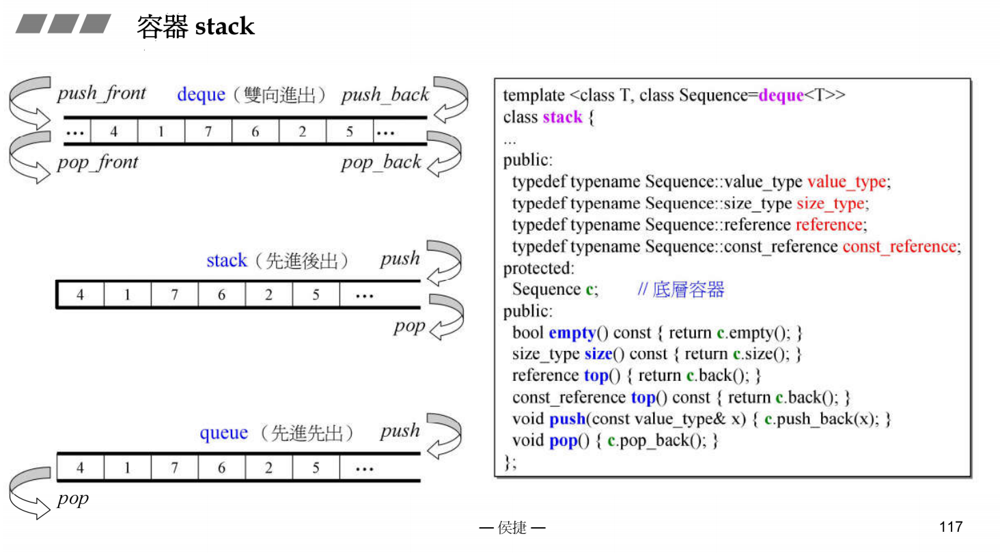
Set
集合
t：红黑树
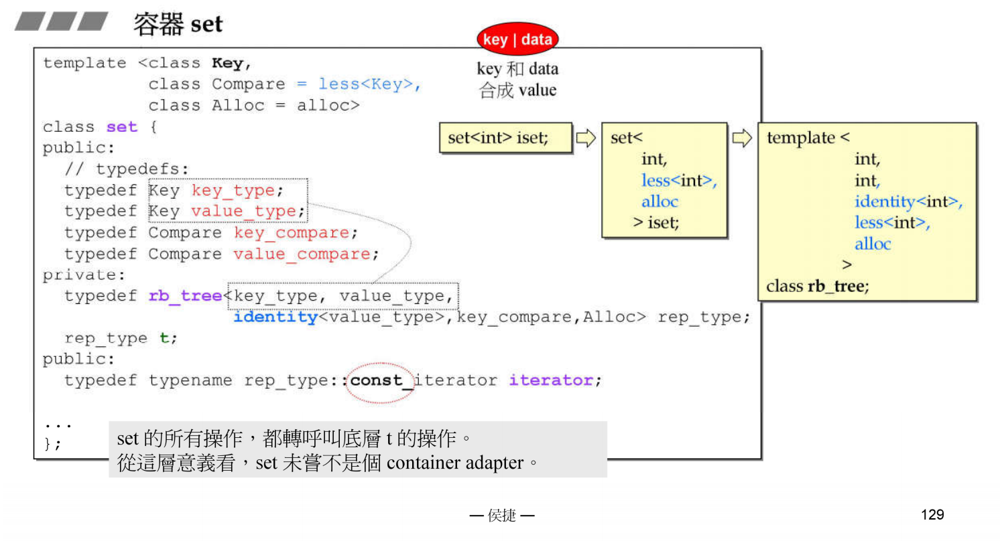
| 集合 | 底层实现 | 是否有序 | 数值是否可以重复 | 能否更改数值 | 查询效率 | 增删效率 |
|---|---|---|---|---|---|---|
| std::set | 红黑树 | 有序 | 否 | 否 | O(log n) | O(log n) |
| std::multiset | 红黑树 | 有序 | 是 | 否 | O(logn) | O(logn) |
| std::unordered_set | 哈希表 | 无序 | 否 | 否 | O(1) | O(1) |
std::unordered_set底层实现为哈希表，std::set 和std::multiset 的底层实现是红黑树，红黑树是一种平衡二叉搜索树，所以key值是有序的，但key不可以修改，改动key值会导致整棵树的错乱，所以只能删除和增加
Map
键值对集合
t：红黑树
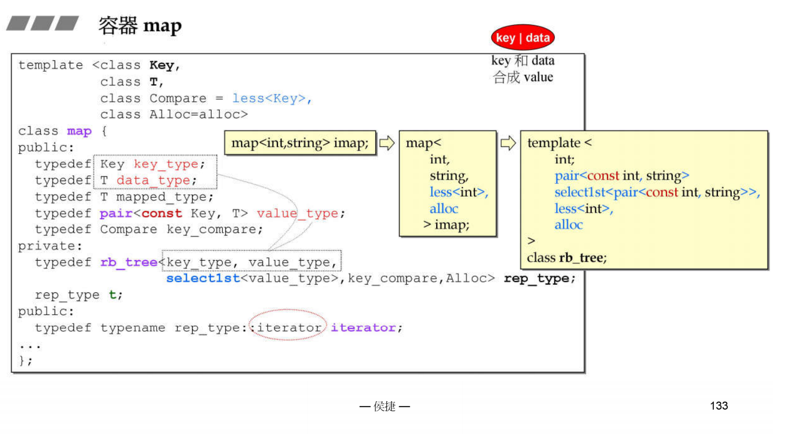
| 映射 | 底层实现 | 是否有序 | 数值是否可以重复 | 能否更改数值 | 查询效率 | 增删效率 |
|---|---|---|---|---|---|---|
| std::map | 红黑树 | key有序 | key不可重复 | key不可修改 | O(logn) | O(logn) |
| std::multimap | 红黑树 | key有序 | key可重复 | key不可修改 | O(log n) | O(log n) |
| std::unordered_map | 哈希表 | key无序 | key不可重复 | key不可修改 | O(1) | O(1) |
std::unordered_map 底层实现为哈希表，std::map 和std::multimap 的底层实现是红黑树。同理，std::map 和std::multimap 的key也是有序的
Functors
Iterator Traits
由于算法需要得到iterator的某些属性，对于非指针iterator的结构包含属性，但对于指针类型无法获取。通过iterator traits对于iterator处理